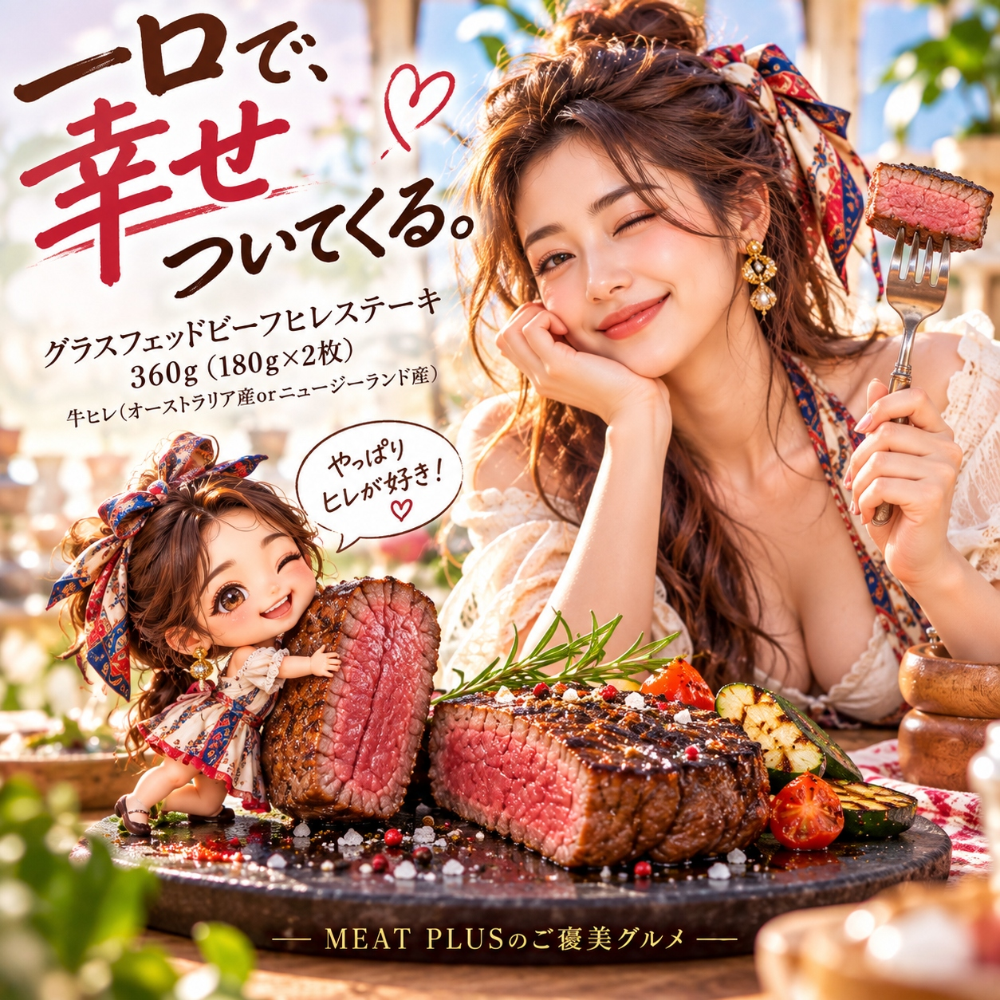

SCENE 01
M014
m 贈り物
グラスフェッドビーフヒレステーキ 360g（180ｇ×2枚）
【食卓がレストランに。牧草牛の赤身が美味しいご褒美ヒレステーキ。】
- 内容量360g（180ｇ×2枚）
- 保存冷凍
- 産地オーストラリアorニュージーランド
商品の特徴を読む
今夜は少し特別なディナーにしませんか？広大な牧草地でのびのび育ったグラスフェッドビーフの、最も柔らかい部位「ヒレ」をご用意しました。赤身肉ならではのしっかりとした肉の旨味と、上品な味わいが口いっぱいに広がります。脂肪が少なく高タンパクなので、健康を気にされる方にもおすすめです。1枚180gの贅沢な厚切りステーキを2枚セットでお届け。冷凍庫にストックしておけば、記念日や週末のごちそう、急なおもてなしにもすぐに対応できます。使いやすい個包装も嬉しいポイント。大切な方への贈り物としても、その品質と味わいで必ずお喜びいただけます。ご家庭で本格的なステーキを囲む、心満たされるひとときをぜひお楽しみください。
公式サイトへ移動します。価格・在庫・配送条件は移動先で最終確認してください。

SCENE 02
大切な方への贈り物としても、その品質と味わいで必ずお喜びいただけます。
SCENE 03
冷凍庫にストックしておけば、記念日や週末のごちそう、急なおもてなしにもすぐに対応できます。
PRODUCT INFORMATION
購入前に確認したい商品情報
- 商品名
- グラスフェッドビーフヒレステーキ 360g（180ｇ×2枚）
- 商品規格
- 360g（180ｇ×2枚）
- 保存方法
- 冷凍
- 原産国
- オーストラリアorニュージーランド
- 製造地
- 日本
- 賞味期限
- 発送日より3ヶ月
原材料
牛ヒレ（オーストラリア産orニュージーランド産）
FAQ
購入前のよくあるご質問
美味しい解凍方法を教えてください。
お召し上がりになる前日に、冷凍庫から冷蔵庫に移してゆっくりと解凍するのがおすすめです。低温で時間をかけることで、ドリップ（肉汁）の流出を最小限に抑え、お肉の旨味を保つことができます。お急ぎの場合は、パックのまま氷水に浸けて解凍してください。
上手に焼くコツはありますか？
焼く30分〜1時間ほど前に冷蔵庫から出し、お肉を常温に戻しておくことがポイントです。熱したフライパンで両面に焼き色をつけた後、火を弱めてお好みの焼き加減に仕上げてください。焼き上がり後にアルミホイルで包んで少し休ませると、肉汁が落ち着き、よりジューシーになります。
MEAT PLUS OFFICIAL SHOP
【食卓がレストランに。牧草牛の赤身が美味しいご褒美ヒレステーキ。】
仕入れ・加工・梱包・発送まで自社で行うMEAT PLUSの公式オンラインショップでご注文いただけます。
公式オンラインショップで購入する商品選びの要点
グラスフェッドビーフヒレステーキ 360g（180ｇ×2枚）。商品規格：360g（180ｇ×2枚）。保存方法：冷凍。原産国：オーストラリアorニュージーランド。製造地：日本。賞味期限：発送日より3ヶ月。
価格・在庫・配送日・送料・ギフト対応は、公式通販の商品ページで最新情報をご確認ください。
もう少し、見てみる？
こちらの商品もチェック